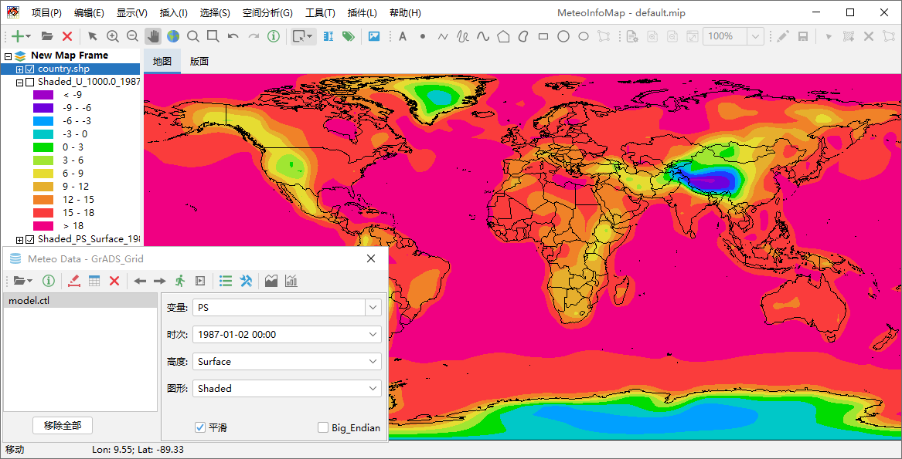
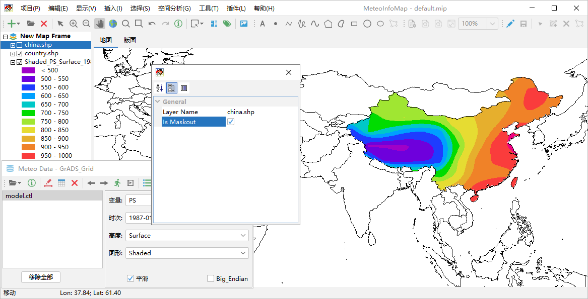

屏蔽多边形区域外部图形¶
屏蔽外部图形的功能是指利用多边形区域范围来屏蔽多边形外部的图形，而只显示多边形区域范围内的图形。例如通过一个 全球气象数据做出地面气压场的等值线填色图。
如果想只显示中国区域的图形，需要先添加一个中国区域的多边形图层，可以使用MeteoInfo -> map目录中的china.shp 文件。然后点击“显示 -> 屏蔽外部图形”菜单，在弹出的对话框中设置屏蔽图层（Layer Name）为china.shp， 选中Is Mskout选项即可屏蔽气压场图层中国区域外的图形。需要注意的是气压场图层属性设置对话框中的Is maskout属性 也要是选中状态。配合地图的屏蔽图层设置和每个显示的图层的Is maskout属性可以选择性的屏蔽特定的一个或多个图层。 还有一点需要注意，用来屏蔽的图层中的多边形不要太复杂，会影响图形的显示速度。
